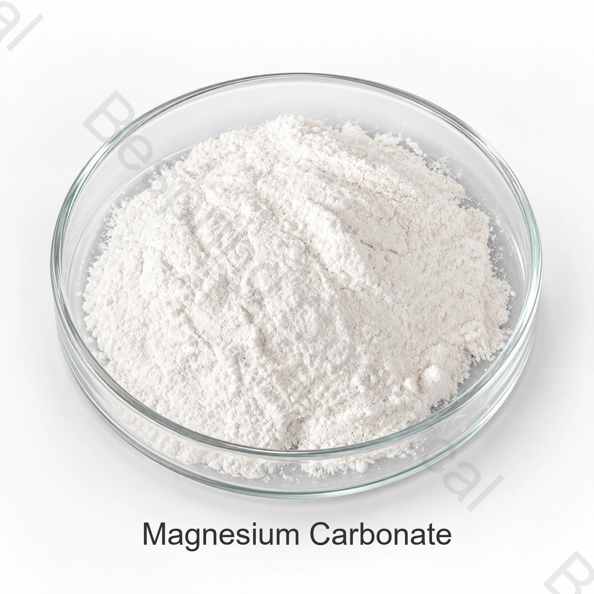

Mélanges en poudre
Contrôlez l’écoulement et la formation de grumeaux dans le mélange réel, à l’humidité du procédé et avec le conditionnement prévu.
Évaluation des ingrédients
Pour évaluer le carbonate de magnésium dans une formulation alimentaire, vérifiez les règles du marché de destination puis comparez la composition, la pureté et la masse volumique apparente des échantillons.

Illustration de l’aspect. Confirmez la présentation, le conditionnement et les critères de réception dans les documents du produit proposé.
Précisez la catégorie de denrée, la fonction recherchée, les critères qualité, la quantité et le lieu de livraison lors de votre demande de devis.
Aperçu du produit
Le répertoire du JECFA associe le carbonate de magnésium au CAS 546-93-0 et au SIN 504(i). Si un devis mentionne une forme basique hydratée, vérifiez la dénomination, la composition et la présentation dans la fiche technique et la fiche de données de sécurité (FDS/SDS) du produit proposé.
Pour une denrée destinée à l’Union européenne, vérifiez la catégorie, la fonction et les conditions d’emploi dans la base de la Commission européenne et le règlement relatif aux additifs alimentaires. Pour les autres marchés, consultez la réglementation du pays de destination.
Examen de la demande
Contrôlez l’écoulement et la formation de grumeaux dans le mélange réel, à l’humidité du procédé et avec le conditionnement prévu.
Comparez la masse volumique apparente des échantillons selon une même méthode. Observez la pesée, le mélange et le remplissage sur l’équipement prévu.
Définissez la base d’expression de la teneur, en magnésium ou en oxyde de magnésium. Précisez la méthode et les critères de pureté applicables.
Caractéristiques commerciales
Pour chaque critère, indiquez la plage d’acceptation, l’unité et la méthode d’essai.
| Paramètre | Point à vérifier |
|---|---|
| Identité et aspect | Dénomination, composition, forme physique et méthode d’identification. |
| Teneur | Base de calcul, unité et méthode d’essai pour le magnésium ou l’oxyde de magnésium. |
| Pureté et microbiologie | Analyses, seuils applicables et méthodes selon l’usage prévu. |
| Masse volumique apparente | Préparation de l’échantillon, conditions de mesure et plage d’acceptation. |
Appui à la qualification
Stockage et manutention
Vérifiez le lot, l’étiquetage et l’intégrité du conditionnement à la réception. Respectez les conditions indiquées dans la FDS et les documents du produit convenu.
Questions de l'acheteur
Comparez les identifiants et la composition indiqués dans la fiche technique et la FDS. À la réception, vérifiez le certificat d’analyse du lot livré.
Mesurez la masse volumique apparente selon la même méthode puis vérifiez la pesée, le mélange et le remplissage dans les conditions réelles.
Précisez la denrée, la fonction, les critères analytiques, la quantité, le lieu de livraison et les documents requis.
Ingrédients connexes
Examiner l'identité, les spécifications, les applications et les considérations relatives à l'approvisionnement.
Examiner l'identité, les spécifications, les applications et les considérations relatives à l'approvisionnement.
Examiner l'identité, les spécifications, les applications et les considérations relatives à l'approvisionnement.
Approvisionnement fondé sur les spécifications
Précisez la denrée, les critères qualité, la quantité, le lieu de livraison et les documents requis.
Si le formulaire est indisponible, vous pouvez ouvrir la page de contact ou écrire à l’équipe commerciale.
Dites-nous votre marché de qualité et de destination afin que nous puissions confirmer quels documents sont disponibles pour votre commande.
Une référence externe n'est pas un certificat de lot ou une spécification de produit Bespring.